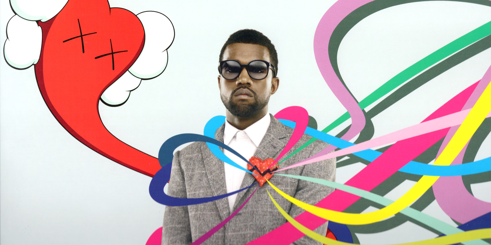

808s & Heartbreak is the fourth studio album by American hip hop producer and vocalist Kanye West. It was released on November 24, 2008, by Roc-A-Fella Records. West recorded the album during September and October 2008 at Glenwood Studios in Burbank, California and Avex Recording Studio in Honolulu, Hawaii, with the help of producers No I.D., Jeff Bhasker and others. Conceived in the wake of several distressing personal events, 808s & Heartbreak marked a major musical departure from West's previous rap records, instead featuring a sparse, electronic sound and West singing through an Auto-Tune vocal processor. His lyrics explore themes of loss, alienated fame, and heartache, while the album's production abandons conventional hip hop sounds in favor of a minimalist sonic palette, which includes prominent use of the titular Roland TR-808 drum machine. 808s & Heartbreak debuted at number one on the Billboard 200, selling 450,145 copies in its first week. Despite varying responses from listeners, the album received positive reviews from most critics and was named one of 2008's best records in several year-end lists. Four singles were released to promote the record, including the hit singles "Love Lockdown" and "Heartless". 808s & Heartbreak has since been cited as a prominent influence on subsequent hip hop, pop, and R&B music, as a new wave of rappers, singers, and producers came to adopt aspects of its style and thematic content.By 2013, it had sold 1.7 million copies in the United States.
[Verse 1: Kanye West] My friend showed me pictures of his kids And all I could show him was pictures of my cribs He said his daughter got a brand new report card And all I got was a brand new sports car, oh [Chorus: Kid Cudi] And my head keeps spinning Can't stop having these visions, I gotta get with it And my head keeps spinning I can't stop having these visions, I gotta get with it [Verse 2: Kanye West] Dad cracked a joke, all the kids laughed But I couldn't hear him all the way in first class Chased the good life my whole life long Look back on my life and my life gone Where did I go wrong? [Chorus: Kid Cudi] And my head keeps spinning Can't stop having these visions, I gotta get with it And my head keeps spinning I can't stop having these visions, I gotta get with it [Interlude: Kanye West] I've seen it, I've seen it before I've seen it, I've seen it before I've seen it, I've seen it before I've seen it, I've seen it before [Verse 3: Kanye West] My god-sister getting married by the lake But I couldn't figure out who I'd wanna take Bad enough that I showed up late I had to leave before they even cut the cake Welcome to heartbreak [Chorus: Kid Cudi] And my head keeps spinning Can't stop having these visions, I gotta get with it And my head keeps spinning I can't stop having these visions, I gotta get with it [Outro: Kanye West] And I and I can't stop No, no, I can't stop No, no, no, no, I can't stop No, no, no, no, I can't stop Can't stop, I can't stop, I can't stop No, no, no, no, no, no, no, no No, no, no, no No, no, I can't stop I can't stop having these visions I gotta get with it